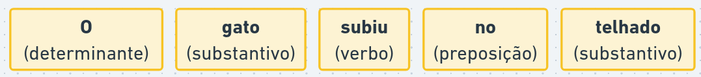
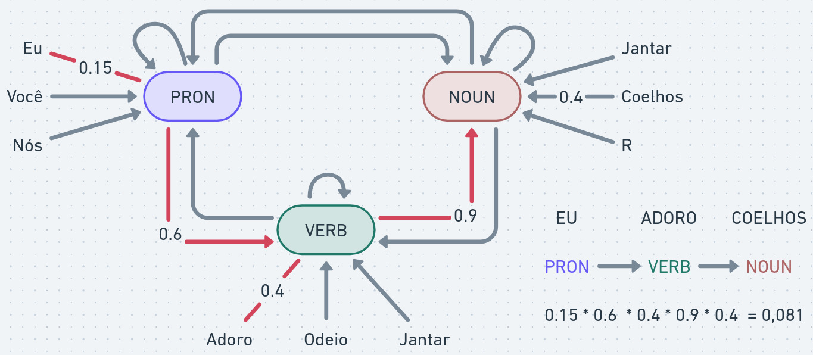
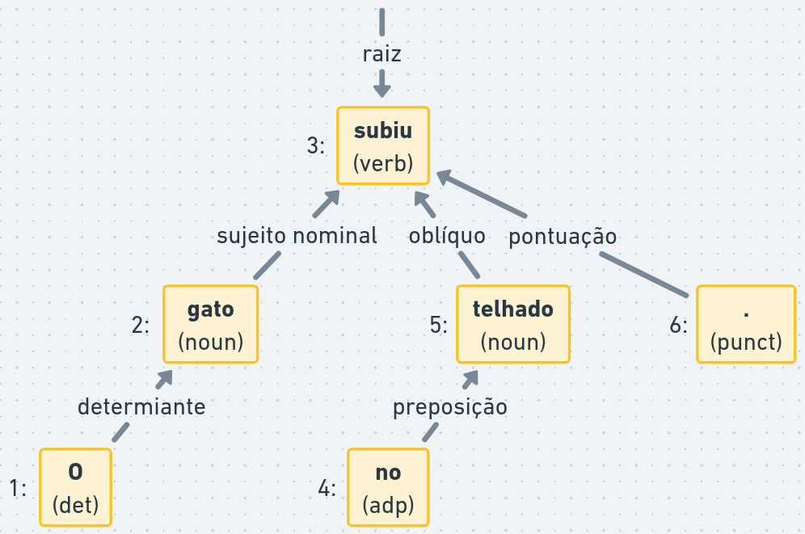
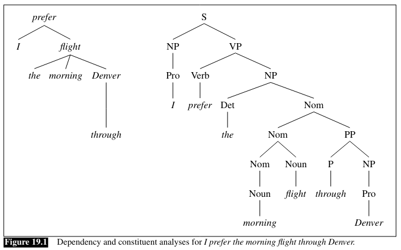

Rows: 1527 Columns: 21
── Column specification ────────────────────────────────────────────────────────
Delimiter: ","
chr (16): nome, uf, partido, uri, nome_civil, sexo, uf_nascimento, municipi...
dbl (1): id
lgl (1): data_falecimento
dttm (1): hora_inicio
date (2): data_nascimento, data_situacao
ℹ Use `spec()` to retrieve the full column specification for this data.
ℹ Specify the column types or set `show_col_types = FALSE` to quiet this message.
Classes gramaticais, classes de palavras ou partes do discurso (em inglês parts of speech) é a forma como categorizamos palavras com base em sua função. Por exemplo: substantivos, verbos, adjetivos, advérbios, pronomes, etc.

A tarefa de atribuir uma classe para cada palavra de um texto é chamada de rotulagem de sequência. Existem diversos algoritmos para rotulagem de classes gramaticais.
Com classes anotadas, podemos fazer análises mais aprofundadas, como:
investigar os principais verbos, substantivos e adjetivos utilizados por determinado grupo
comparar contagens de cada classe para métricas de complexidade gramatical
identificar nominalizações: transformação de verbos em substantivos para ocultar atores (ex: “a polícia repreendeu os manifestantes de forma violenta” vs “a repressão violenta contra os manifestantes”).
Para construir e avaliar modelos para rotulagens de sequência, pesquisadores de linguística computacional criaram diversas bases de anotação e esquemas de rotulação. Os mais utilizados são: Penn Treebank e Universal Dependencies.
O padrão de rótulos proposto por Marcus, Santorini, and Marcinkiewicz (1993) foi utilizado para criar a base anotada Penn Treebank:
Anotação (tag)
Descrição
Anotação (tag)
Descrição
CC
Coordinating conjunction
PRP$
Possessive pronoun
CD
Cardinal number
RB
Adverb
DT
Determiner
RBR
Adverb, comparative
EX
Existential there
RBS
Adverb, superlative
FW
Foreign word
RP
Particle
IN
Preposition or subordinating conjunction
SYM
Symbol
JJ
Adjective
TO
to
JJR
Adjective, comparative
UH
Interjection
JJS
Adjective, superlative
VB
Verb, base form
LS
List item marker
VBD
Verb, past tense
MD
Modal
VBG
Verb, gerund or present participle
NN
Noun, singular or mass
VBN
Verb, past participle
NNS
Noun, plural
VBP
Verb, non-3rd person singular present
NNP
Proper noun, singular
VBZ
Verb, 3rd person singular present
NNPS
Proper noun, plural
WDT
Wh-determiner
PDT
Predeterminer
WP
Wh-pronoun
POS
Possessive ending
WP$
Possessive wh-pronoun
PRP
Personal pronoun
WRB
Wh-adverb
Nivre et al. (2020) propõe o Universal Dependencies v2, uma base anotada com notações gramaticais universais:
Palavras não classificáveis, como erros de digitação, URLs, palavras estrangeiras
www, http, software, feedback
Modelos ocultos de Markov (HMM, em inglês, Hidden Markov Models) são modelos estatísticos comuns para tarefas de rotulagem de sequência.
A ideia central do HMM é definir estados e transições probabilísticas.
Vejamos um exemplo com três classes de palavras:

No exemplo, a palavra “eu” tem 15% de chance de ser um pronome e a próxima palavra tem 60% de chance de ser verbo e 40% de chance de ser “adoro”.
As probabilidades são acumuladas e o “caminho mais provável” é escolhido. A escolha de melhor caminho é feita, por exemplo, com o algoritmo de Viterbi.
HMMs não são a única abordagem para este tipo de problema:
Gramáticas formais: historicamente, gramáticas foram propostas para rotular frases e derivar árvores sintáticas. Gramáticas livres de contexto contêm uma série de regras determinísticas para derivar frases em diversas línguas. A complexidade das regras e questões como ambiguidade fizeram com que o uso de gramáticas seja mais restrito.
Modelos estatísticos: técnicas como HMMs, quando acrescidas de atributos adicionais (formas das palavras, dados morfológicos etc.) que são conhecidas como campos aleatórios condicionais (CRF, do inglês conditional random fields), possuem bom desempenho (96% de acurácia, o mesmo desempenho de anotadores humanos).
Modelos de linguagem: Modelos de linguagem: o uso de redes neurais para linguística computacional e processamento de linguagem natural é bastante difundido. Estes modelos se destacam principalmente em tarefas que exigem conhecimento sobre significados (semântica) e contexto externo. Veremos mais detalhes sobre estes modelos nas próximas aulas.
4.1.1 Exemplo de análise sintática com Spacy
Spacy é uma biblioteca da linguagem python que foi adaptada pela bibliteca spacyr em R.
Spacy utiliza diversos componentes para analizar linguagem natural, como tokenizers, parsers, modelos de embedding etc. Estes componentes executam em sequência (pipeline) e são configuráveis.
Spacy utiliza diversos componentes para analisar linguagem natural, como tokenizers, parsers, modelos de embedding etc. Estes componentes executam em sequência (pipeline) e são configuráveis.
A configuração padrão que vamos utilizar é o pipeline para língua portuguesa, treinada a partir de textos de notícias: pt_core_news_sm.
O código abaixo baixa e inicializa os componentes:
spacy_download_langmodel("pt_core_news_sm")
Warning in spacy_download_langmodel("pt_core_news_sm"): Skipping installation.
Use `force` to force installation or update.
spacy_initialize("pt_core_news_sm")
successfully initialized (spaCy Version: 3.8.11, language model: pt_core_news_sm)
Com a biblioteca carregada, podemos processar os textos com a função spacy_parse:
texto <-"O gato subiu no telhado."spacy_parse(texto)
Warning in spacy_parse.character(texto): lemmatization may not work properly in
model 'pt_core_news_sm'
doc_id sentence_id token_id token lemma pos entity
1 text1 1 1 O o DET
2 text1 1 2 gato gato NOUN
3 text1 1 3 subiu subir VERB
4 text1 1 4 no em o ADP
5 text1 1 5 telhado telhado NOUN
6 text1 1 6 . . PUNCT
A função spacy_parse também processa objetos corpus da biblioteca quanteda:
frases_ulysses <-c("A Nação quer mudar, a Nação deve mudar, a Nação vai mudar.","O homem público é o cidadão de tempo inteiro, de quem as circunstâncias exigem o sacrifício da liberdade pessoal, mas a quem o destino oferece a mais confortadora das recompensas: a de servir à Nação em sua grandeza e projeção na eternidade.")corpus_ulysses <-corpus(frases_ulysses)spacy_parse(frases_ulysses)
Warning in spacy_parse.character(frases_ulysses): lemmatization may not work
properly in model 'pt_core_news_sm'
doc_id sentence_id token_id token lemma pos entity
1 text1 1 1 A o DET
2 text1 1 2 Nação Nação PROPN MISC_B
3 text1 1 3 quer querer VERB
4 text1 1 4 mudar mudar VERB
5 text1 1 5 , , PUNCT
6 text1 1 6 a o DET
7 text1 1 7 Nação Nação PROPN MISC_B
8 text1 1 8 deve dever VERB
9 text1 1 9 mudar mudar VERB
10 text1 1 10 , , PUNCT
11 text1 1 11 a o DET
12 text1 1 12 Nação Nação PROPN MISC_B
13 text1 1 13 vai ir AUX
14 text1 1 14 mudar mudar VERB
15 text1 1 15 . . PUNCT
16 text2 1 1 O o DET
17 text2 1 2 homem homem NOUN
18 text2 1 3 público público ADJ
19 text2 1 4 é ser AUX
20 text2 1 5 o o DET
21 text2 1 6 cidadão cidadão NOUN
22 text2 1 7 de de ADP
23 text2 1 8 tempo tempo NOUN
24 text2 1 9 inteiro inteiro ADJ
25 text2 1 10 , , PUNCT
26 text2 1 11 de de ADP
27 text2 1 12 quem quem PRON
28 text2 1 13 as o DET
29 text2 1 14 circunstâncias circunstância NOUN
30 text2 1 15 exigem exigir VERB
31 text2 1 16 o o DET
32 text2 1 17 sacrifício sacrifício NOUN
33 text2 1 18 da de o ADP
34 text2 1 19 liberdade liberdade NOUN
35 text2 1 20 pessoal pessoal ADJ
36 text2 1 21 , , PUNCT
37 text2 1 22 mas mas CCONJ
38 text2 1 23 a a ADP
39 text2 1 24 quem quem PRON
40 text2 1 25 o o DET
41 text2 1 26 destino destino NOUN
42 text2 1 27 oferece oferecer VERB
43 text2 1 28 a o DET
44 text2 1 29 mais mais ADV
45 text2 1 30 confortadora confortadorar VERB
46 text2 1 31 das de o ADP
47 text2 1 32 recompensas recompensa NOUN
48 text2 1 33 : : PUNCT
49 text2 1 34 a o DET
50 text2 1 35 de de SCONJ
51 text2 1 36 servir servir VERB
52 text2 1 37 à a o ADP
53 text2 1 38 Nação Nação PROPN MISC_B
54 text2 1 39 em em ADP
55 text2 1 40 sua seu DET
56 text2 1 41 grandeza grandeza NOUN
57 text2 1 42 e e CCONJ
58 text2 1 43 projeção projeção NOUN
59 text2 1 44 na em o ADP
60 text2 1 45 eternidade eternidade NOUN
61 text2 1 46 . . PUNCT
Por padrão, o resultado retorna:
doc_id: o identificador do documento
sentence_id: o identificador da frase
token_id: o identificador do token
token: o texto do token (palavra, pontuação, símbolo)
lemma n
1 ter 245
2 fazer 188
3 querer 167
4 poder 107
5 haver 93
6 falar 89
7 dizer 88
8 ver 56
9 dar 55
10 ser 51
A função as.tokens permite converter a tabela novamente em objeto tokens da biblioteca quanteda concatenando a informação de classe gramatical (opcionalmente utilizando lemas no lugar do token original):
Além das classes gramaticais, também podemos gerar relações de dependência entre as palavras:
as relações de dependência determinam a função de uma palavra, representada pelo tipo de relação de dependência
a função é relativa a uma palavra “pai” dentro da frase, ligando o dependente à dependência
cada frase possui uma palavra raiz (geralmente o verbo principal)
Por exemplo:

As relações de dependência permitem análises mais aprofundadas, como:
qualificação: adjetivos relacionados a um objeto
identificação de atores e ações
atribuir agência: usos de voz ativa e passiva ou estruturas impessoais
Os dois últimos pontos fazem com que as relações de dependência formem uma hierarquia ou árvore. Estas regras não são universais, algumas relações e línguas são melhor representadas como redes de dependências ou grafos, onde qualquer palavra pode depender de outra.
As hierarquias das relações de dependências são similares, mas não equivalem às árvores sintáticas. Árvores sintáticas geram relações entre constituintes, que podem ser palavras ou sub-frases (ex: frase nominal, frase verbal etc).

Há duas vantagens de relações de dependência sobre árvores gramaticais:
relações de dependência são mais diretas, por exemplo, a palavra do sujeito é conectada diretamente ao verbo
gramáticas impõem ordem nas relações e algumas línguas são mais flexíveis quanto à ordem das palavras
Alguns exemplos de tipos de relações de dependência do padrão Universal Dependencies v2 são:
4.2.1 Exemplo de relações de dependência com Spacy
Podemos gerar relações de dependência com a biblioteca spacyr utilizando o parâmetro dependency = TRUE na função spacy_parse:
texto <-"O gato subiu no telhado."spacy_parse(texto, dependency =TRUE)
Warning in spacy_parse.character(texto, dependency = TRUE): lemmatization may
not work properly in model 'pt_core_news_sm'
doc_id sentence_id token_id token lemma pos head_token_id dep_rel
1 text1 1 1 O o DET 2 det
2 text1 1 2 gato gato NOUN 3 nsubj
3 text1 1 3 subiu subir VERB 3 ROOT
4 text1 1 4 no em o ADP 5 case
5 text1 1 5 telhado telhado NOUN 3 obl
6 text1 1 6 . . PUNCT 3 punct
entity
1
2
3
4
5
6
Os dados retornados agora incluem:
head_token_id : aponta para o token “pai” na árvore de dependências
dep_rel: o tipo da relação de dependência
textos_exemplo <-c(doc1 ="O governo cortou os gastos públicos ontem.",doc2 ="Os gastos públicos foram cortados pela inflação.",doc3 ="A oposição propôs uma nova lei orçamentária.")sintaxe_exemplo <-spacy_parse(textos_exemplo, pos =TRUE, dependency =TRUE, nounphrase =TRUE)
Warning in spacy_parse.character(textos_exemplo, pos = TRUE, dependency = TRUE,
: lemmatization may not work properly in model 'pt_core_news_sm'
sintaxe_exemplo
doc_id sentence_id token_id token lemma pos head_token_id
1 doc1 1 1 O o DET 2
2 doc1 1 2 governo governo NOUN 3
3 doc1 1 3 cortou cortar VERB 3
4 doc1 1 4 os o DET 5
5 doc1 1 5 gastos gasto NOUN 3
6 doc1 1 6 públicos público ADJ 5
7 doc1 1 7 ontem ontem ADV 5
8 doc1 1 8 . . PUNCT 3
9 doc2 1 1 Os o DET 2
10 doc2 1 2 gastos gasto NOUN 5
11 doc2 1 3 públicos público ADJ 2
12 doc2 1 4 foram ser AUX 5
13 doc2 1 5 cortados cortar VERB 5
14 doc2 1 6 pela por o ADP 7
15 doc2 1 7 inflação inflação NOUN 5
16 doc2 1 8 . . PUNCT 5
17 doc3 1 1 A o DET 2
18 doc3 1 2 oposição oposição NOUN 3
19 doc3 1 3 propôs propor VERB 3
20 doc3 1 4 uma um DET 6
21 doc3 1 5 nova novo ADJ 6
22 doc3 1 6 lei lei NOUN 3
23 doc3 1 7 orçamentária orçamentário ADJ 6
24 doc3 1 8 . . PUNCT 3
dep_rel entity nounphrase whitespace
1 det beg TRUE
2 nsubj end_root TRUE
3 ROOT TRUE
4 det beg TRUE
5 obj mid_root TRUE
6 amod end TRUE
7 advmod FALSE
8 punct FALSE
9 det beg TRUE
10 nsubj:pass mid_root TRUE
11 amod end TRUE
12 aux:pass TRUE
13 ROOT TRUE
14 case TRUE
15 obl:agent beg_root FALSE
16 punct FALSE
17 det beg TRUE
18 nsubj end_root TRUE
19 ROOT TRUE
20 det beg TRUE
21 amod mid TRUE
22 obj mid_root TRUE
23 amod end FALSE
24 punct FALSE
Para identificar atores podemos filtrar por tipo de relação “sujeito nominal” nsubj:
Para associar às ações, precisamos obter o token relativo à head_token_id que aponta para o verbo do qual o sujeito nominal depende.
Utilizamos a função left_join do tidyverse para unir novamente as colunas da tabela original sem filtro (sintaxe_exemplo) de acordo com os critérios: mesmo documento, mesma frase, com o token identificado pela coluna verbo_id:
acoes_atores <- atores |>left_join(sintaxe_exemplo, by =c( # juntando de volta para pegar o lema do verbo"doc_id"="doc_id","sentence_id"="sentence_id","verbo_id"="token_id" ) )acoes_atores
4.3 Modelos de tópicos: Latent Dirichlet Allocation (LDA)
Em diversos cenários estamos analisando um conjunto de documentos e queremos identificar os temas ou tópicos principais presentes nesses documentos. Por exemplo:
quais temas foram discutidos no plenário da câmara em 2025?
quais os temas mais discutidos por um partido político?
quais os temas mais discutidos por um deputado?
A análise de tópicos é uma técnica de modelagem de texto que permite descobrir automaticamente os tópicos subjacentes em um conjunto de documentos.
A análise de tópicos é considerada uma técnica de aprendizado não-supervisionado. Os dados são apresentados e o modelo tenta encontrar padrões e estruturas subjacentes sem rótulos ou categorias pré-definidas.
O objetivo é identificar grupos de palavras que frequentemente coocorrem em documentos, sugerindo a presença de um tópico.
Latent Dirichlet Allocation (LDA) é um dos métodos mais populares para análise de tópicos. Ele assume que:
cada documento é uma mistura de vários tópicos
cada tópico é uma distribuição de palavras
4.3.1 Exemplo de análise de tópicos com LDA
Primeiramente, vamos construir uma DFM com o corpus de interesse.
Para melhores resultados, vamos nos concentrar em palavras:
muito faladas em termos absolutos: 20% dos termos mais frequentes
concentradas em poucos discursos: termos que aparecem em até 10% dos discursos
tm_dfm <- corpus_discursos |>tokens(remove_punct =TRUE, remove_symbols =TRUE) |>tokens_remove(stopwords("portuguese")) |>dfm() |>dfm_trim(min_termfreq =0.8, # descarta os 80% de termos menos frequentestermfreq_type ="quantile",max_docfreq =0.1, # descarta palavras que apareçem em mais de 10% dos documentosdocfreq_type ="prop" )tm_dfm
A análise de tópicos com LDA descobre tópicos de forma automática e não supervisionada com base nas frequências de palavras nos documentos.
No entanto, às vezes, precisamos orientar a análise para focar em temas específicos ou para obter tópicos mais interpretáveis.
A análise guiada de tópicos (em inglês, guided topic analysis ou seeded topic analysis) é uma abordagem que permite incorporar conhecimento prévio ou restrições na modelagem de tópicos.
Neste método, precisamos fornecer um conjunto de palavras-chave “sementes” para cada tópico potencial.
O modelo usa estas palavras-chave para orientar a descoberta de tópicos mais alinhados com os temas de interesse.
4.4.1 Exemplo de análise de tópicos guiada com seededlda
Para especificar as sementes, construímos um objeto dicionário da biblioteca quanteda:
Para saber mais sobre análise sintática, gramáticas e relações de dependência, veja os capítulos 17, 18 e 19 do livro Speech and Language Processing (Jurafsky and Martin 2026).
Para uma discussão sobre análise de tópicos guiada em estudos sociais, veja o artigo de Schweinberger (2025).
4.6 Atividade prática
Utilizando o corpus de discursos de abril de 2025 da câmara:
Utilize o procedimento para identificar atores e ações no corpus dos discursos da câmara e identifique os principais verbos relacionados ao governo.
Realize a análise de tópicos LDA com 4 e 15 tópicos
Crie um dicionário com palavras-chave de outros temas e realize a análise de tópicos guiada
Jurafsky, Daniel, and James H. Martin. 2026. Speech and LanguageProcessing: AnIntroduction to NaturalLanguageProcessing, ComputationalLinguistics, and SpeechRecognition, with LanguageModels. 3rd ed. https://web.stanford.edu/~jurafsky/slp3/.
Marcus, Mitchell P., Beatrice Santorini, and Mary Ann Marcinkiewicz. 1993. “Building a Large Annotated Corpus of English: The Penn Treebank.” Edited by Julia Hirschberg. Computational Linguistics 19 (2): 313330. https://aclanthology.org/J93-2004/.
Nivre, Joakim, Marie-Catherine de Marneffe, Filip Ginter, Jan Hajič, Christopher D. Manning, Sampo Pyysalo, Sebastian Schuster, Francis Tyers, and Daniel Zeman. 2020. “Universal Dependencies v2: An Evergrowing Multilingual Treebank Collection.” In, edited by Nicoletta Calzolari, Frédéric Béchet, Philippe Blache, Khalid Choukri, Christopher Cieri, Thierry Declerck, Sara Goggi, et al., 40344043. Marseille, France: European Language Resources Association. https://aclanthology.org/2020.lrec-1.497/.
Schweinberger, Martin. 2025. “Seeded Topic Modeling as a More Appropriate Alternative to Unsupervised Standard Topic Models.”Discourse Studies 27 (4): 675678. https://doi.org/10.1177/14614456241293895.
Silge, Julia, and David Robinson. 2017. Text mining with R: a tidy approach. Beijing, China: O’Reilly.